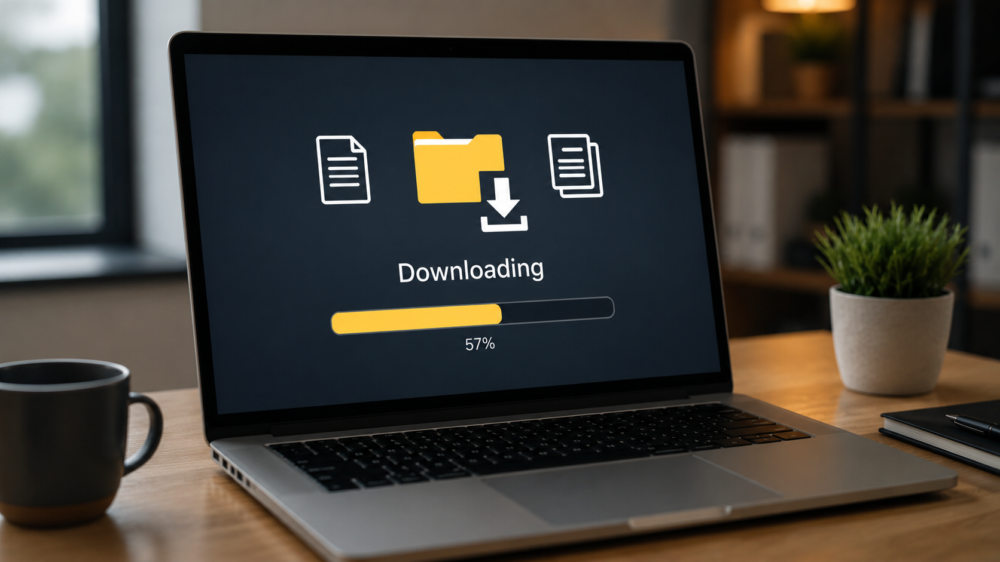

AFTER BUILDING YOUR PC:
Once your PC is fully built and all components are installed correctly, there are a few important steps you should follow before you start using it normally.Now is also the time to set up your mouse, keyboard, monitor and any other accessories or perhipherals you want to use with your computer (including WiFi accessories).
These steps help ensure your system is stable, safe, and running properly.


FIRST BOOT
When you turn on your PC for the first time, make sure everything on the outside powers on as it should:- Fans should spin
- RGB or Lighting Effects (if present) should light up
- Display should appear on your monitor
If nothing appears, double-check power cables and connections (inside and outside the PC) and ensure the switch on the PSU is set to the I position and that the monitor is connected to the GPU, not the motherboard (if you have a dedicated GPU).
MOTHERBOARD BIOS (Basic Input/Output System) SETUP
To enter the BIOS, repeatedly press the BIOS key during startup (commonly: Delete (M4), F2, or F12, depending on your motherboard) or wait until the screen turns on and tells you which key to press to enter the BIOS.Once in the BIOS, you should:
- Check that all components are detected (CPU, RAM, Storage, etc. if applicable)
- Note: Some components may not be visible in the BIOS, as this system is solely focused on the necessary hardware for booting and ignores secondary components like the GPU.
- Enable XMP/EXPO to make your RAM run at its advertised speed
- XMP (Intel) and EXPO (AMD) are memory profiles that automatically set your RAM to its rated speed instead of the default slower speed. They perform the same function but are designed for different platforms.
- Check CPU and system temperatures
- Make sure the boot order is correct
- Now is the time to plug in your installation media USB drive (if needed). During installation, the USB drive containing the operating system installer should be placed at the top of the boot order. Once the operating system has been successfully installed onto your storage drive inside the PC, the USB drive can be removed.
Once these steps are completed, you can find the option to Save and Exit the BIOS. Then, if you are doing it, the computer will jump directly to the Operating System setup and you can follow the installation and setup instructions from there.

This is an example of the BIOS Screen of a Motherboard from the brand ASUS.

OPERATING SYSTEM INSTALLATION
After BIOS setup, you will need to install an Operating System.This is usually done using:
- A USB drive with an Operating System installer
- You should research and download the official Installation Media for the correct Operating System and create a bootable USB drive (at least 8GB is recommended)
- Following on-screen installation steps
Windows can be used without activation, but some features such as personalization settings may be limited and a watermark may appear on screen. Activating Windows is optional, but recommended. For more information about operating systems and Windows activation, see the Operating System section on the Components page.
Note: Operating System installations differ depending on the version. Find proper installation instructions for yours online.
Once installed, your PC will be ready to use normally.
DRIVER INSTALLATION
Drivers allow your hardware to communicate properly with your system. They ensure that all your components work as they should, and require updating every so often to ensure their functionality.Important Drivers to Install:
- GPU Drivers
- Motherboard Drivers (chipset, audio, network, etc. as needed)
Tip: Now is a good time to connect to the internet as you will need to find and download these drivers online.
Update drivers and your operating system when avaible to ensure system stability. Download and update drivers referring to your specific components.
You can find your drivers online (once connected to wifi after setup) typically including instructions on how to install and manage them.

FINAL CHECKS
The last step is to quickly make sure:- Temperature and Performance are stable idle and in demanding tasks
- All fans are working properly
- RGB is working properly
FINAL NOTE
After completing these steps, your PC is fully ready to use. You can now install games, applications, and customize your system as needed.Congratulations on your new PC! We hope this guide was helpful for you and we'd love to hear what you thought of it in the "ABOUT OUR SITE" page. Enjoy your brand new computer and be proud of the hard work and dedication you did to get it!